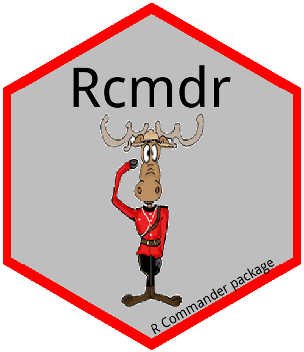

2 . 설치 / Install
2.1 운영체제
2.1.1 맥OS
Rcmdr 통계 프로그램을 맥에서 설치하는 경우 다음 전제 조건을 충족시키고 순서대로 진행하여 설치작업을 완료한다.
가장 최신 맥OS로 갱신
R 설치 다운로드
XQuartz 설치 다운로드
재부팅
R.app에서 R 실행-
메뉴에서 Packages & Data > Package Installer 이동
-
Rcmdr검색 -
Rcmdr선택 -
Install Dependecies체크박스 클릭 -
Install Selected클릭
-
R 명령 프롬프트에서
library(Rcmdr)실행
자세한 사항은 아래 동영상 참조
2.1.2 윈도우즈
R 설치 다운로드
-
바탕화면
R x64 4.*.*아이콘 더블클릭 R 실행- R 명령 프롬프트에서
install.packages("Rcmdr", dep = TRUE)실행 -
Rcmdr패키지를 다운로드 받을 CRAN mirror를 선택 (예를 들어,0-Cloud [https]) - R 명령 프롬프트에서
library(Rcmdr)실행
- R 명령 프롬프트에서
2.1.3 RStudio 에서 Rcmdr 설치
RStudio 설치 다운로드
콘솔 창에
install.packages("Rcmdr")입력우측하단
Packages–>install–>Rcmdr입력후install버튼 클릭-
Rcmdr실행- 콘솔창에 library(“Rcmdr”) 입력 실행
2.2 단축 아이콘 바로 실행
윈도우 운영체제의 경우 바탕화면에 Rcmdr 아이콘을 설치하여 더블클릭으로 바로 실행할 수 있도록 하면 마치 SPSS 를 무료로 사용하는 기분이 들 것이다. 이를 위해서 몇가지 작업을 순차적으로 진행해야 한다.
-
Rgui.exe실행파일을 바로 실행시킬 수 있는 바탕화면 바로가기 아이콘을 준비한다.- R을 설치하면
C:\Program Files\R\R-4.1.3\bin디렉토리에Rgui.exe파일이 설치되며 설치단계에 OK 를 하게 되면 바탕화면에 R로고와 함께R x64 4.1.3와 같은 명칭도 함께 부여된다. 여기 R-4.1.3은 버전으로 설치시점과 선호에 따라 설치하는 버전 숫자가 달라질 수는 있으나 나머지 과정을 모두 동일하다.
- R을 설치하면
-
바로가기 아이콘 명칭 변경(
R x64 4.1.3→Rcmdr)과 아이콘을 변경한다. 명칭은 원하는 바로 수정할 수 있다.- 예를 들어,
Rcmdr,통계 패키지,R 커맨더등
- 예를 들어,
-
Rcmdr단축 아이콘을 더블클릭했을 때 R이 뜨는 것이 아니라Rcmdr통계 패키지 화면을 띄우는 설정-
대상(T):
Rgui.exe가 실행될 때Rcmdr패키지를 물고 바로 실행되게 하여 통계 패키지를 바로 띄운다."C:\Program Files\R\R-4.1.3\bin\x64\Rgui.exe" --sdi R_DEFAULT_PACKAGES="Rcmdr" LANGUAGE="ko"
-
시작위치(S):
Rcmdr통계 분석을 할 때 미리 작업공간을 지정한다. 즉, 디렉토리를 설정한다.- 시작위치 설정이 필요한 이유는 통계 분석에 필요한 데이터, 분석 결과물(그래프,
.png파일 등), 스크립트를 한곳에 관리하기 위함이다.
- 시작위치 설정이 필요한 이유는 통계 분석에 필요한 데이터, 분석 결과물(그래프,
-
2.2.1 단축 아이콘 제작과 변경
Rcmdr 아이콘을 다운로드 받는다. 다운로드 받은 Rcmdr 육각형 스티커의 배경을 처리를 위해서 온라인 웹사이트를 무료로 이용한다.
- 이미지 배경제거: https://onlinepngtools.com/
- PNG 파일 ICO 변환: https://icoconvert.com/
| Rcmdr 로고 | Rcmdr 바로가기 ico 파일 |
|---|---|
|  |
2.2.2 한글 메뉴
Rcmdr 기본설정은 영어가 기본으로 되어 있어 Rcmdr 설정하면 통계 패키지 메뉴가 영어로 되어 있다. 이를 한글로 변경하고자 한다면 다음 설정을 반영하면 된다.
Sys.setenv(LANGUAGE="ko")
매번 library(Rcmdr) 실행할 때마다 명령어를 실행하는 것에 어려움이 있기 때문에 상기 설정을 .Rprofile 파일에 반영한다.
즉, C:\Users\<사용자명>\.Rprofile 파일을 텍스트 편집기로 열어 상기 내용 Sys.setenv(LANGUAGE="ko") 복사하여 붙여넣게 되면 다음번부터 기본 설정으로 한글이 적용되어 Rcmdr 통계 패키지 한글 메뉴에서 바로 시작할 수 있게 된다. 바탕화면에 단축아이콘을 설정한 경우 Rcmdr이 실행되면서 한글 메뉴 적용이 되도록 --sdi R_DEFAULT_PACKAGES="Rcmdr" LANGUAGE="ko" 인수를 추가한다.